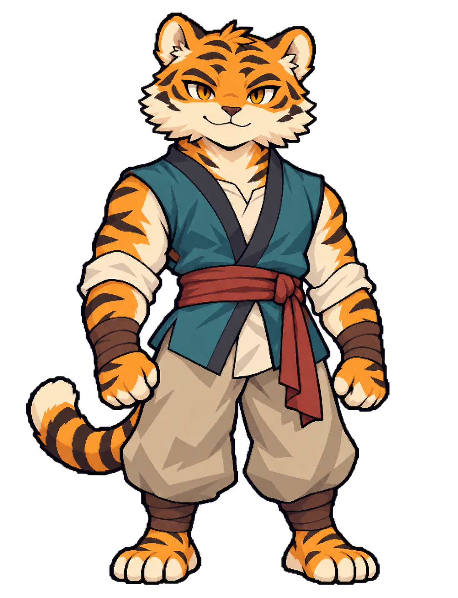
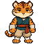

청록 조끼 · 젊은 성인
젊은 아타호

또렷한 눈빛 · 안정적인 지지 · 다부진 체형
원화01 · 1098 × 1433 PNG
이계취호전 · 별도 캐릭터 리소스
청록 조끼와 모래색 바지, 또렷한 눈빛과 다부진 체형. 이전에 선택한 젊은 외형을 원화로 확장했습니다.
원화 01 · 승인 도트 재사용 · 모션 생성 대기과거 1차 5번의 64×64 원본입니다. 첨부 이미지와 RGBA 픽셀이 같으며, 새 정면 후보를 생성하지 않았습니다.

청록 조끼 · 젊은 성인

또렷한 눈빛 · 안정적인 지지 · 다부진 체형
원화01 · 1098 × 1433 PNG
갈색 겉옷 · 현재 검토안

둥근 나이살 · 세월이 읽히는 얼굴 · 여유
컨셉04 · 1098 × 1433 PNG
승인한 그림체 기준

회백색 털 · 남색 여행복 · 부적술사
승인 컨셉04 · 1098 × 1433 PNG
원화는 같은 카드 높이로 비교합니다. 게임 속 키나 표시 배율을 정한 화면은 아닙니다.
젊은 아타호는 짧게 준비하고, 발로 지면을 단단히 지지하며 허리와 중심을 함께 움직입니다. 타격과 정지가 분명하고, 공격 뒤에는 빠르게 안정된 자세로 돌아옵니다.
현재는 승인 도트와 원화만 준비했습니다. 이동·전투 모션은 이번 생성 한도 승인 후 별도로 만들 예정입니다.